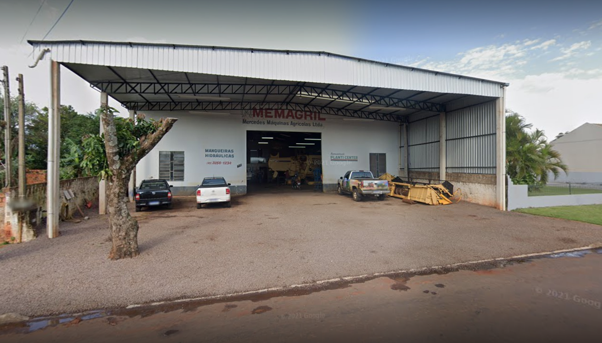
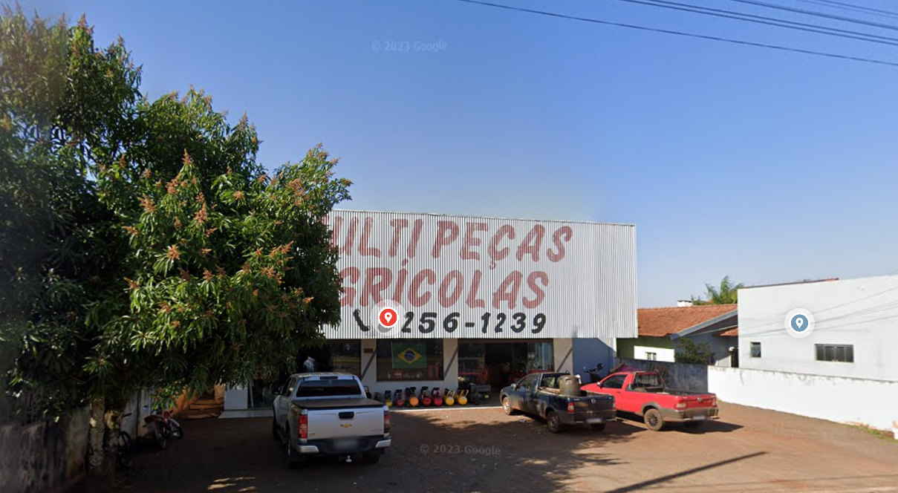
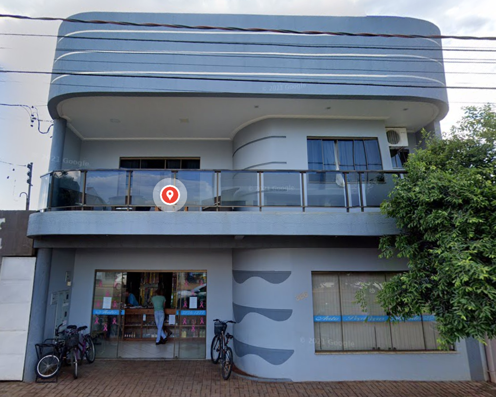
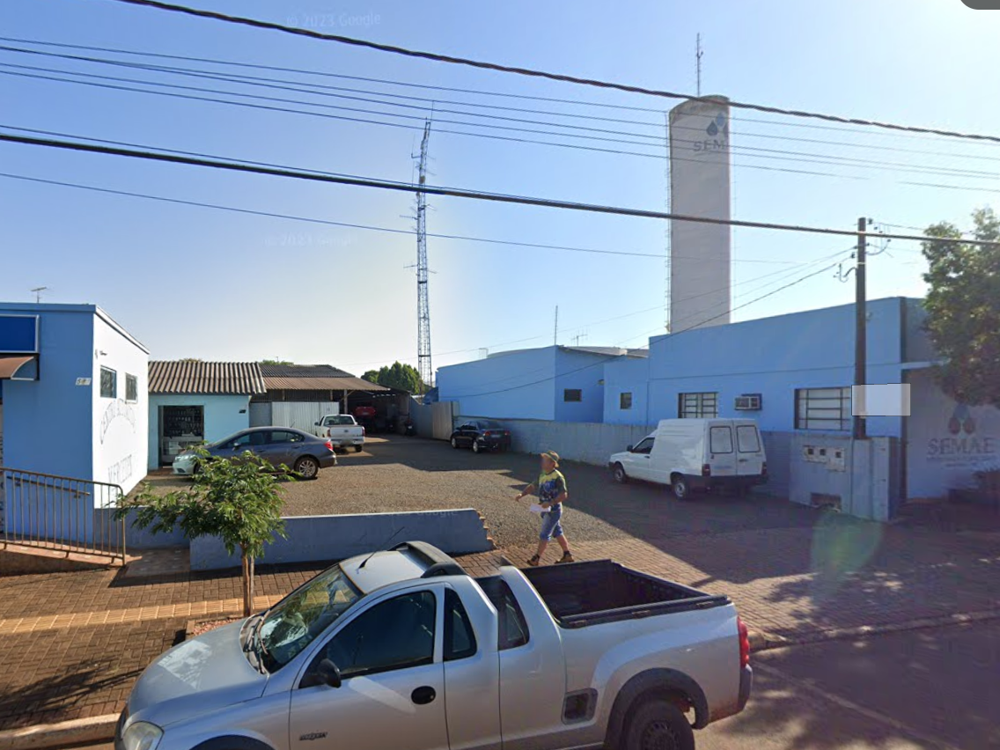
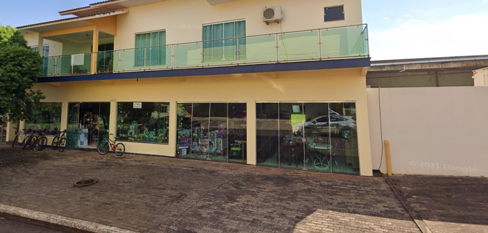
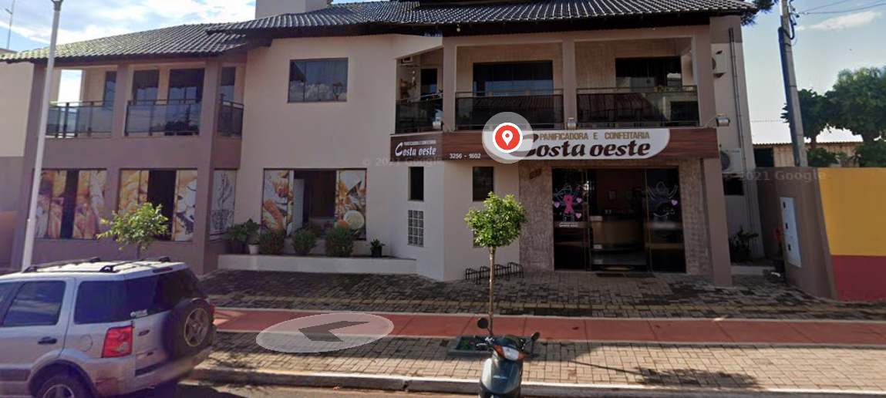

🛒 Comércios Locais


Memagril - Mercedes Máquinas Agrícolas Ltda
Comércio de máquinas e equipamentos agrícolas...
📍 Ver no mapa

Agromar Mecânica e Peças Agrícolas
Serviços de mecânica e venda de peças para máquinas agrícolas.
📍 Ver no mapa

Auto Peças Mercedes (Vilmar Schaab & Cia Ltda)
Peças automotivas para veículos urbanos e rurais.
📍 Ver no mapa

Centro Automotivo Mercedes (Fiedler & Fiedler Ltda)
Serviços de manutenção e reparo de veículos e tratores.
📍 Ver no mapa

Donato Refrigeração / Solar Loja
Soluções em refrigeração e energia solar para o campo.
📍 Ver no mapa

Costa Oeste Panificadora e Confeitaria
Pães e confeitos frescos para a comunidade local.
📍 Ver no mapa